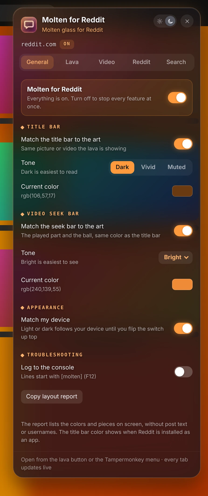
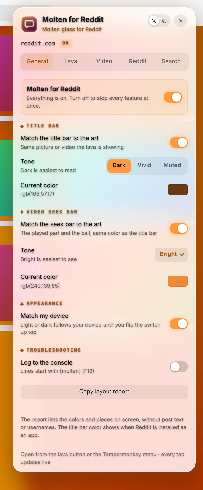
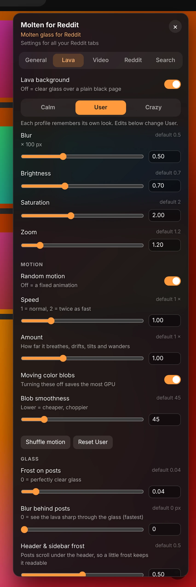
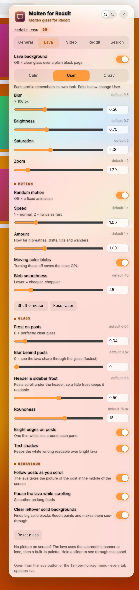
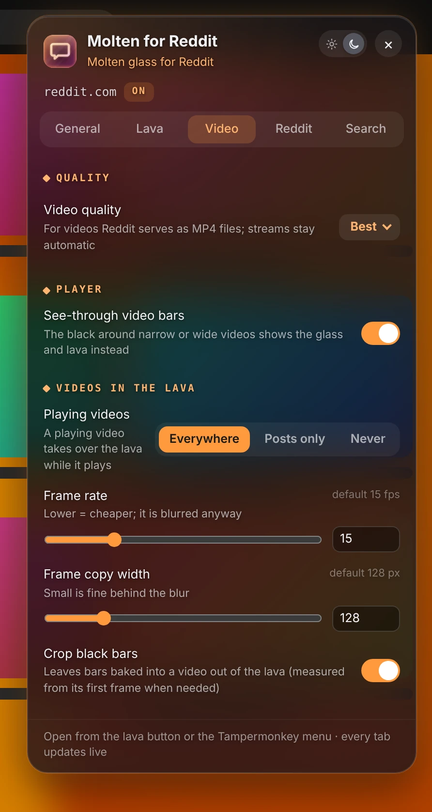
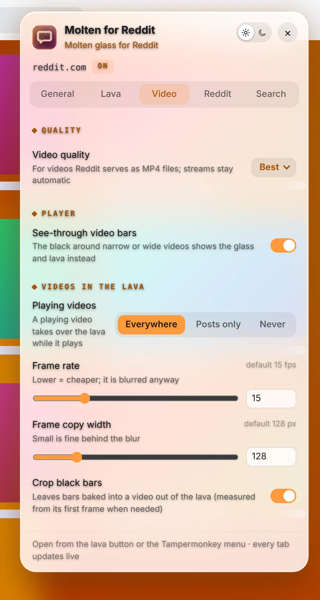
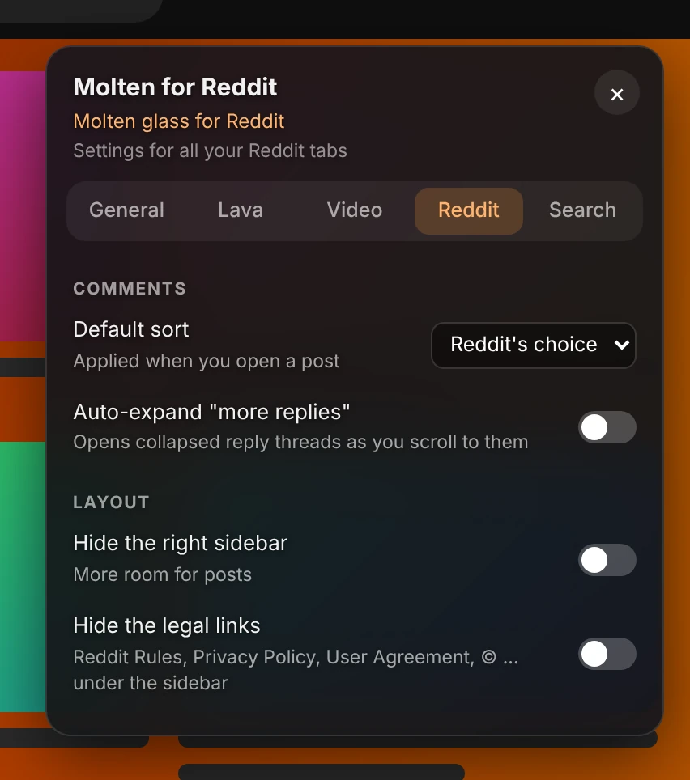
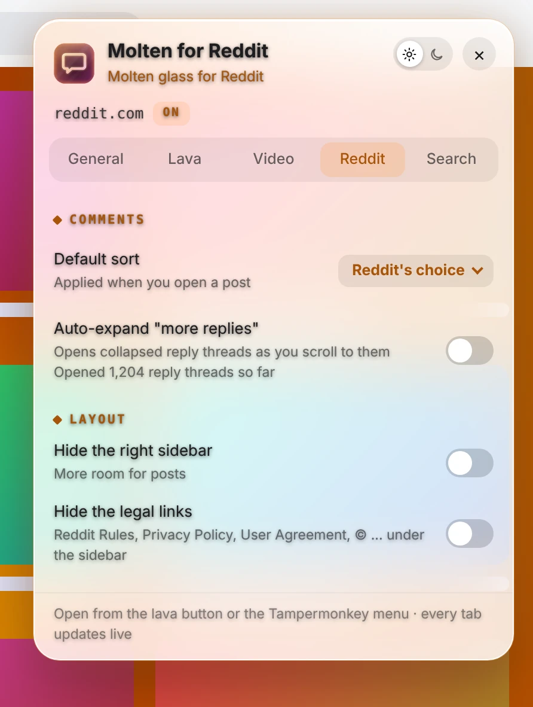
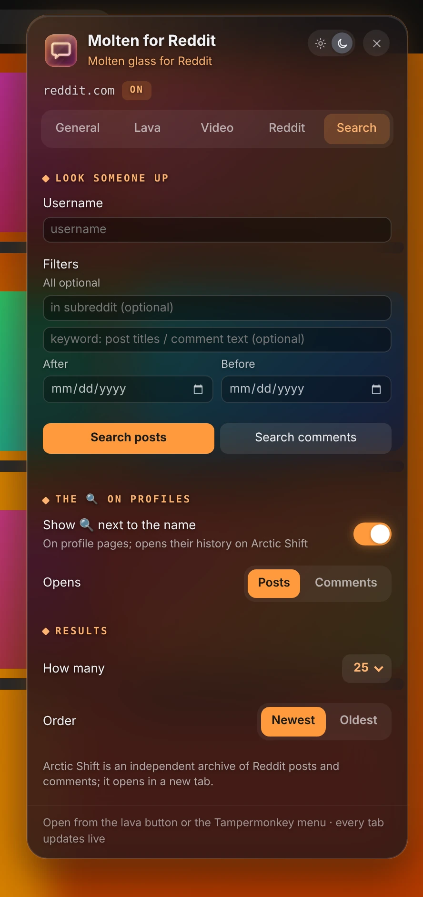
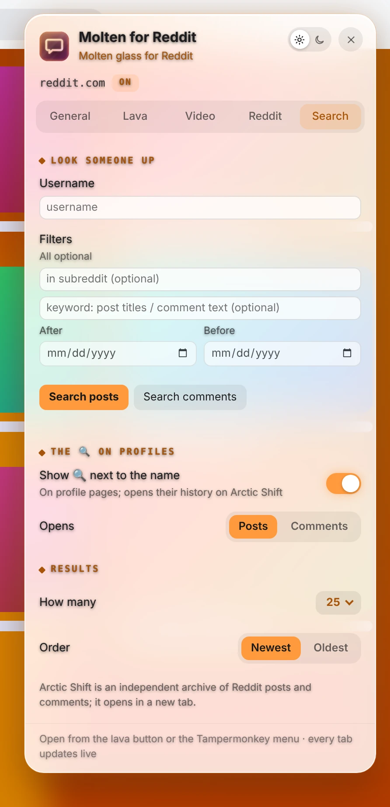

Molten for Reddit
Molten glass for new Reddit.
Molten for Reddit puts a lava-lamp background made from the image or video you are looking at behind clear-glass posts and comments. Click the orange lava button in the top bar for settings.


Lava from what you're looking at
The background comes from the image or video in the middle of the screen, or the subreddit's banner when there isn't one.
Clear-glass posts
Frost, blur, roundness and outline you can tune, so the lava shows through without hurting readability.
Calm, User or Crazy
Three profiles, each with its own blur, brightness, color and motion.
Video, done right
The best MP4 quality, glass instead of black bars, and playing videos that take over the lava.
Colors from the art
The title bar and seek bar match the post.
Reddit, tidied up
Your default comment sort, replies that expand themselves, and an optional cleaner layout.
Look anyone up
Search a user's posts and comments on Arctic Shift, with a 🔍 next to names on profiles.







